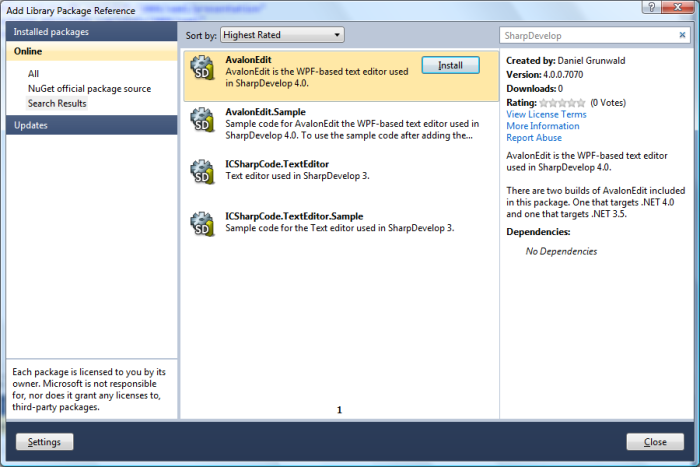

Now that NuGet 1.0 has been released and the NuGet package submission process has been made much easier there are now NuGet packages for SharpDevelop that can be downloaded from the main NuGet package repository.

The packages currently available are:
Contains AvalonEdit the WPF-based text editor that is included with SharpDevelop 4.0. Two versions of AvalonEdit are included. One that targets .NET 3.5 and one that targets .NET 4.0. Download this package if you just want the AvalonEdit assembly and nothing else.
Contains sample code for AvalonEdit taken from Daniel Grunwald's CodeProject article. The sample code shows how to use the text editor's inside a WPF application including a simple example of code completion.
To get the sample code working in a WPF application created in Visual Studio 2010 you will need to:
Modify your App.xaml file so the StartupUri points to the AvalonEdit Sample window.
<Application
x:Class="WpfApp.App"
xmlns="http://schemas.microsoft.com/winfx/2006/xaml/presentation"
xmlns:x="http://schemas.microsoft.com/winfx/2006/xaml"
StartupUri="/AvalonEdit.Sample/Window1.xaml">
<Application.Resources>
</Application.Resources>
</Application>
Contains the text editor that is included in SharpDevelop 3.2.1. This text editor targets .NET 2.0.
Contains sample code for the text editor that is included in SharpDevelop 3.2.1. The code shows how to use the text editor in a Windows Forms application including a simple example of code completion.